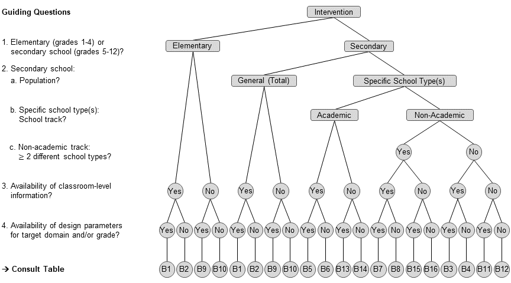
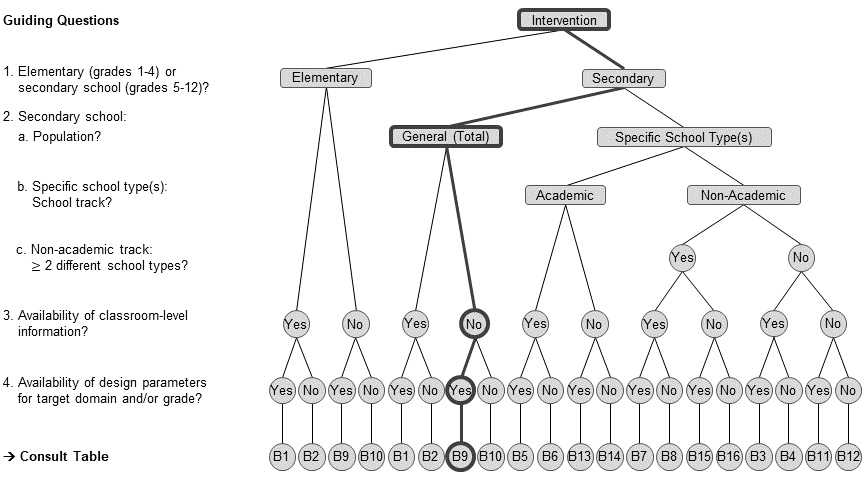
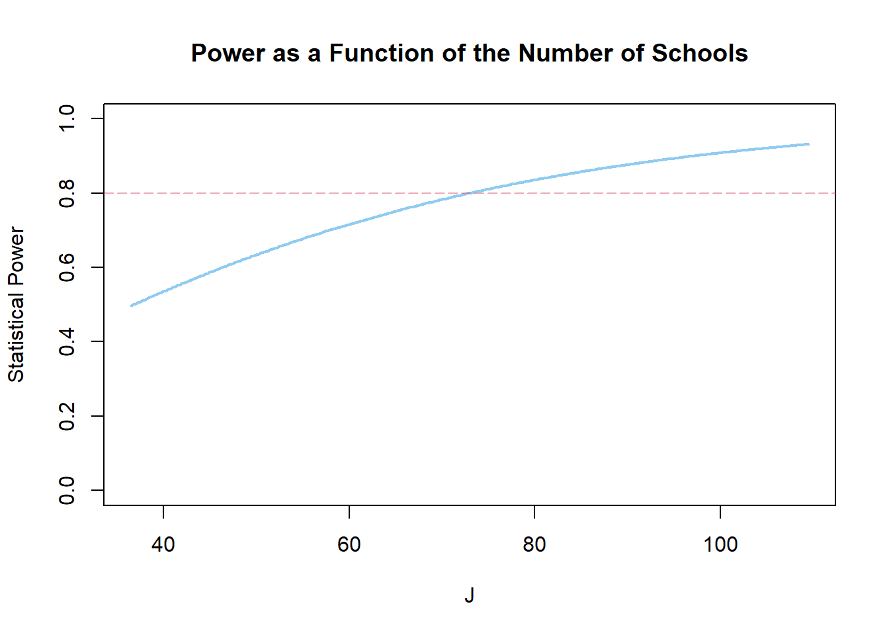
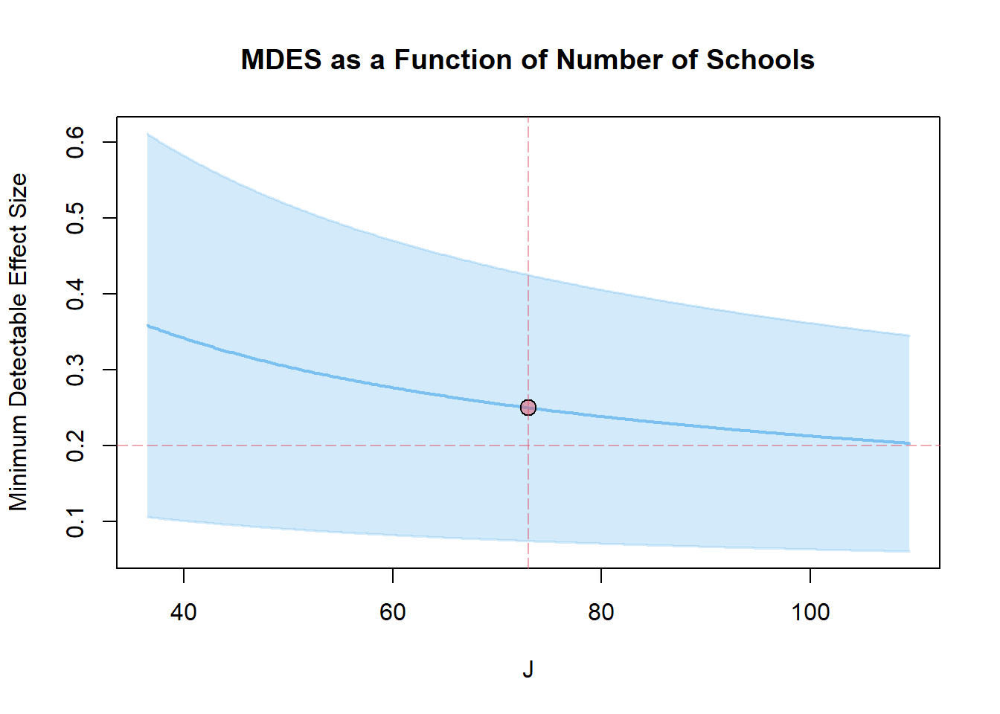

Designs with Covariates
In a CRT, entire groups of students (e.g. whole schools) are randomly assigned to the experimental groups; likewise, the treatment and control protocols are delivered at the cluster level.
In this tutorial, we will walk through the process of planning two CRT designs:
Scenario 4
We will start by planning a two-level CRT (2L-CRT) where students at L1 are nested within schools at L2 and entire schools are randomly assigned to the experimental conditions.
Scenario 5
Then, we will continue by planning a three-level CRT (3L-CRT) where students at L1 are nested within classrooms at L2 which are, in turn, nested within schools at L3. Here, randomization/treatment assignment occurs, again, at the school level.
Multilevel Design Parameters
To plan sensitive (i.e., sufficiently powered and precise) CRTs on student achievement, reliable estimates of multilevel design parameters that adequately mirror the clustered variance structure of the outcome are critical. These design parameters include:
Intraclass correlation coefficients (ICCs)
ρ values that quantify achievement differences between clustersExplained Variances
R2 values that quantify the proportions of explained variance by covariates at the various levels
Generally, design parameters should match the peculiarities of the target research context as closely as possible (e.g., the target population of the intervention, the specific hierarchical data structure, and the achievement outcome under investigation). There are multiple resources of empirical values of ρ and R2. A review of existing international and German research on design parameters for student achievement can be found in Stallasch et al. (2021). A useful collection of respective estimates for the United States is the “Online Intraclass Correlation Database” created by Larry V. Hedges and colleagues and hosted by the Institute for Policy Research at the Northwestern University.
Design Parameters for the German School Context
In this workshop, we draw on our own compilation of ρ and R2 values (and corresponding standard errors) for the German school system published in Stallasch et al. (2021). Based on three longitudinal German large-scale assessments (NEPS, PISA-I+, and DESI) which provided achievement data across the entire school career (Grades 1 to 12), we generated design parameters that apply to:
several student populations
both two-level (students within schools) and three-level designs (students within classrooms within schools)
a broad array of domains
R2 values at each level are available for three covariate sets:
pretest scores
sociodemographic characteristics (comprising students’ gender and migration background, as well as parents’ educational attainment, and families’ HISEI)
the combination thereof
The design parameters are provided via an interactive Excel file (Supplemental Online Material B) that comes with a detailed introduction on the application scopes of the various sets of estimates. This document can be downloaded from the OSF or the Journal’s website.
To facilitate the workflow in R (e.g., to avoid time-consuming and error-prone C&P of estimates), an .rda file that encloses the full compilation of design parameters (as a list of data frames) is shared in this course’s repository on github which is ready to be directly loaded:
# load design parameters from github
load(url("https://github.com/sophiestallasch/2022-workshop-CRT/blob/main/data/multides1.rda?raw=true"))If you run into problems, click here to download the data to your local machine and then load it into R.
# inspect list
summary(multides1) Length Class Mode
B1_General 28 tbl_df list
B2_General_ND 14 tbl_df list
B3_Adjusted 28 tbl_df list
B4_Adjusted_ND 14 tbl_df list
B5_Academic 28 tbl_df list
B6_Academic_ND 14 tbl_df list
B7_Non-Academic 28 tbl_df list
B8_Non-Academic_ND 14 tbl_df list
B9_General-2l 20 tbl_df list
B10_General-2l_ND 10 tbl_df list
B11_Adjusted-2l 20 tbl_df list
B12_Adjusted-2l_ND 10 tbl_df list
B13_Academic-2l 20 tbl_df list
B14_Academic-2l_ND 10 tbl_df list
B15_Non-Academic-2l 20 tbl_df list
B16_Non-Academic-2l_ND 10 tbl_df listThe list contains 16 data frames, that can be grouped into two broad classes:
Point Estimates and Standard Errors
Data frames B1, B3, B5, B7, B9, B11, B13, and B15 contain the full sets of (population-specific) empirical estimates of design parameters for each domain, subdomain, and grade, along with their standard errors.Normative Distributions
Data frames B2, B4, B6, B8, B10, B12, B14, and B16 (all data frames ending with “_ND”) contain (population-specific) normative distributions (i.e., minimum, 25th percentile, median, 75th percentile, and maximum) of those design parameters summarized across domains and/or grades. These distributions can serve as guesstimates to plan studies whose target domain and/or grade is not covered in .
Overview of Data Frames
We also created a flow chart to guide the choice of appropriate design parameters as a function of key characteristics of the target intervention.

Structure of Data Frames
Data frames that contain the point estimates and standard errors (i.e., B1, B3, B5, B7, B9, B11, B13, and B15) are structured as follows.
| Variable | Description |
|---|---|
| domain | Domain of achievement outcome (for details, see section ‘Achievement Domains’) |
| subdomain | Subdomain of achievement outcome (for details, see section ‘Achievement Domains’) |
| grade | Grade of achievement outcome |
| study | Large-scale assessment study (and cohort): ‘NEPS-SC2’, ‘NEPS-SC3’, ‘NEPS-SC4’, ‘PISA-I+’, ‘DESI’ |
| wave | Wave of large-scale assessment study |
| model | Hierarchical structure of specified multilevel model: ‘3l’, ‘2l’ |
| icc_l2.est | ICC at the classroom level ρL2 |
| icc_l2.se | SE of ICC at the classroom level SE(ρL2) |
| icc_l3.est | ICC at the school level ρL3 |
| icc_l3.se | SE of ICC at the school level SE(ρL3) |
| r2_l1_pretest.est | Explained variance by a pretest at the student level R2L1 |
| r2_l1_pretest.se | SE of explained variance by a pretest at the student level SE(R2L1) |
| r2_l2_pretest.est | Explained variance by a pretest at the classroom level R2L2 |
| r2_l2_pretest.se | SE of explained variance by a pretest at the classroom level SE(R2L2) |
| r2_l3_pretest.est | Explained variance by a pretest at the school level R2L3 |
| r2_l3_pretest.se | SE of explained variance by a pretest at the school level SE(R2L3) |
| r2_l1_ses.est | Explained variance by sociodemographics at the student level R2L1 |
| r2_l1_ses.se | SE of explained variance by sociodemographics at the student level SE(R2L1) |
| r2_l2_ses.est | Explained variance by sociodemographics at the classroom level R2L2 |
| r2_l2_ses.se | SE of explained variance by sociodemographics at the classroom level SE(R2L2) |
| r2_l3_ses.est | Explained variance by sociodemographics at the school level R2L3 |
| r2_l3_ses.se | SE of explained variance by sociodemographics at the school level SE(R2L3) |
| r2_l1_pretestses.est | Explained variance by a pretest and sociodemographics at the student level R2L1 |
| r2_l1_pretestses.se | SE of explained variance by a pretest and sociodemographics at the student level SE(R2L1) |
| r2_l2_pretestses.est | Explained variance by a pretest and sociodemographics at the classroom level R2L2 |
| r2_l2_pretestses.se | SE of explained variance by a pretest and sociodemographics at the classroom level SE(R2L2) |
| r2_l3_pretestses.est | Explained variance by a pretest and sociodemographics at the school level R2L3 |
| r2_l3_pretestses.se | SE of explained variance by a pretest and sociodemographics at the school level SE(R2L3) |
Data frames that contain normative distributions (i.e., B2, B4, B6, B8, B10, B12, B14, and B16) are structured as follows.
| Variable | Description |
|---|---|
| domain | Domain of summarized parameters (for details, see section ‘Achievement Domains’) |
| grade_range | Grade range of summarized parameters |
| statistic | Summary statistic: ‘Minimum’, ‘25th Percentile’, ‘Median’, ‘75th Percentile’, ‘Maximum’ |
| icc_l2.est | ICC at the classroom level ρL2 |
| icc_l2.se | SE of ICC at the classroom level SE(ρL2) |
| icc_l3.est | ICC at the school level ρL3 |
| icc_l3.se | SE of ICC at the school level SE(ρL3) |
| r2_l1_pretest.est | Explained variance by a pretest at the student level R2L1 |
| r2_l1_pretest.se | SE of explained variance by a pretest at the student level SE(R2L1) |
| r2_l2_pretest.est | Explained variance by a pretest at the classroom level R2L2 |
| r2_l2_pretest.se | SE of explained variance by a pretest at the classroom level SE(R2L2) |
| r2_l3_pretest.est | Explained variance by a pretest at the school level R2L3 |
| r2_l3_pretest.se | SE of explained variance by a pretest at the school level SE(R2L3) |
| r2_l1_ses.est | Explained variance by sociodemographics at the student level R2L1 |
| r2_l1_ses.se | SE of explained variance by sociodemographics at the student level SE(R2L1) |
| r2_l2_ses.est | Explained variance by sociodemographics at the classroom level R2L2 |
| r2_l2_ses.se | SE of explained variance by sociodemographics at the classroom level SE(R2L2) |
| r2_l3_ses.est | Explained variance by sociodemographics at the school level R2L3 |
| r2_l3_ses.se | SE of explained variance by sociodemographics at the school level SE(R2L3) |
| r2_l1_pretestses.est | Explained variance by a pretest and sociodemographics at the student level R2L1 |
| r2_l1_pretestses.se | SE of explained variance by a pretest and sociodemographics at the student level SE(R2L1) |
| r2_l2_pretestses.est | Explained variance by a pretest and sociodemographics at the classroom level R2L2 |
| r2_l2_pretestses.se | SE of explained variance by a pretest and sociodemographics at the classroom level SE(R2L2) |
| r2_l3_pretestses.est | Explained variance by a pretest and sociodemographics at the school level R2L3 |
| r2_l3_pretestses.se | SE of explained variance by a pretest and sociodemographics at the school level SE(R2L3) |
Note that three-level design parameters (students at L1 within classrooms at L2 within schools at L3) were estimated for grades 1 to 10 only. For grades 11 to 12, no L2 estimates are available as 11th and 12th graders did not attend intact classrooms, but rather the grouping of students varied depending on the subject taught. Therefore, two-level design parameters (students at L1 within schools at L3) were estimated instead. Two-level equivalents for grades 1 to 10 (i.e., ignoring classroom-level clustering) are also provided; you can access them in the data frames labeled with ‘-2l’.
Keep in mind that the top level (which is always the school level) is consistently indicated as ‘_l3’ across all data frames; irrespective of whether L2 estimates were estimated (i.e., also for two-level designs).
Detailed information on the provided design parameters and underlying analysis models can be retrieved from Stallasch et al. (2021).
Achievement Domains
The design parameters cover the following achievement domains.
Note that the (sub)domain character strings in the data frames are named exactly like shown here. For instance, if we want to filter design parameters for English text reconstruction from data frame B1, we could use the following code.
library(PowerUpR)
library(tidyverse)
library(kableExtra)# filter English text reconstruction from data frame B1
eng_ctest <- multides1[["B1_General"]] %>%
filter(domain == "Verbal Skills in English (as Foreign Language)",
subdomain == "Text Reconstruction (C-Test)")Tip: However, avoid to type the full strings. We recommend using pattern matching functions like from the grep() family instead that will do the job for you.
# better:
eng_ctest <- multides1[["B1_General"]] %>%
filter(grepl("Eng", domain),
grepl("C-Test", subdomain))Let’s have a look at the filtered design parameters.
eng_ctest %>%
t() %>% # transpose for better readability
kbl %>%
kable_styling(bootstrap_options = c("condensed", "responsive")) %>%
scroll_box(height = "350px")| domain | Verbal Skills in English (as Foreign Language) | Verbal Skills in English (as Foreign Language) | Verbal Skills in English (as Foreign Language) |
| subdomain | Text Reconstruction (C-Test) | Text Reconstruction (C-Test) | Text Reconstruction (C-Test) |
| grade | 9 | 9 | 9 |
| study | DESI | DESI | DESI (Pooled) |
| wave | 1 | 2 | NA |
| model | 3l | 3l | 3l |
| icc_l2.est | 0.07484727 | 0.09329552 | 0.08274759 |
| icc_l2.se | 0.009634811 | 0.011132797 | 0.007285329 |
| icc_l3.est | 0.5839861 | 0.5519840 | 0.5687772 |
| icc_l3.se | 0.01762045 | 0.01851544 | 0.01276421 |
| r2_l1_pretest.est | NA | 0.4270869 | 0.4270869 |
| r2_l1_pretest.se | NA | 0.007683032 | 0.007683032 |
| r2_l2_pretest.est | NA | 0.8440895 | 0.8440895 |
| r2_l2_pretest.se | NA | 0.01575307 | 0.01575307 |
| r2_l3_pretest.est | NA | 0.998872 | 0.998872 |
| r2_l3_pretest.se | NA | 0.0006166911 | 0.0006166911 |
| r2_l1_ses.est | 0.01315652 | 0.01675238 | 0.01483982 |
| r2_l1_ses.se | 0.002402910 | 0.002561325 | 0.001752443 |
| r2_l2_ses.est | 0.6742777 | 0.6423608 | 0.6577857 |
| r2_l2_ses.se | 0.09820881 | 0.09497836 | 0.06827333 |
| r2_l3_ses.est | 0.8845148 | 0.9068157 | 0.8968653 |
| r2_l3_ses.se | 0.01972262 | 0.01770283 | 0.01317418 |
| r2_l1_pretestses.est | NA | 0.4306028 | 0.4306028 |
| r2_l1_pretestses.se | NA | 0.007663661 | 0.007663661 |
| r2_l2_pretestses.est | NA | 0.8838199 | 0.8838199 |
| r2_l2_pretestses.se | NA | 0.01990558 | 0.01990558 |
| r2_l3_pretestses.est | NA | 0.9993725 | 0.9993725 |
| r2_l3_pretestses.se | NA | 0.000219044 | 0.000219044 |
As can be seen, there are three entries for English text reconstruction as the respective test was administered to students at two time points in the DESI study, namely at the beginning and at the end of grade 9. For the beginning of grade 9, no pretests were available, therefore the corresponding cells are set to NA. A third set of estimates is provided here that contains the meta-analytically pooled results across these two time points (as indicated by ‘DESI (Pooled)’). Note that this integration strategy (applying a fixed effect model approach) was also adopted for other domains in grade 9 in case multiple design parameters were available (as obtained either from several studies [as indicated by ‘All (Pooled)’] or from the two time points in DESI).
Load the design parameter collection.
load("C:/Users/Sophie Stallasch/Documents/Workshops/2024_GEBF_Poweranalyse_Stallasch/2024-workshop-GEBF-power/multides1.rda")Scenario 1: How Many Schools are Required for a 2L-CRT?
Research Team 1 would like to conduct a 2L-CRT on the effectiveness of a school-wide intervention to improve 4th graders’ mathematical achievement in Germany. Team 1 plans to sample 40 students from each school. A standardized treatment effect of d = .25 is considered meaningful, because it represents around one quarter of the expected annual growth in mathematics from Grade 3 to Grade 4 in the German student population (Brunner et al., 2023, Table 1). How many schools are required to detect MDES = .25?
Step 1: Choose the Design Parameters
Which data frame contains the appropriate design parameters?

# -- choose data frame B9
dp_s1 <- multides1[["B9_General-2l"]] |>
# filter mathematics in grade 4
filter(domain == "Mathematics", grade == 4)Let’s have a look at the relevant design parameters.
dp_s1 |>
# select the ICC and its standard error
select(contains("icc")) |>
round(2) |>
pivot_longer(everything(), names_to = "Variable", values_to = "Value") |>
kable()| Variable | Value |
|---|---|
| icc_l3.est | 0.12 |
| icc_l3.se | 0.01 |
Step 2: Define the Assumptions
| Parameter | PowerUpR Conversion |
|---|---|
| Target output | |
| Minimum required sample size of a 2L-CRT: Number of schools J | mrss.cra2() |
| Statistical test | |
| Power 1-β = .80 | power=.80 (default) |
| Significance level α = .05 | alpha=.05 (default) |
| Two-tailed test | two.tailed=TRUE (default) |
| Sample sizes | |
| Harmonic mean number of L1 units per L2 unit n = 40 | n=40 |
| Proportion of sample assigned to treatment P = .50 (balanced) | p=.50 (default) |
| Design parameters | |
| ICC at L2 ρL2 = .12 | rho2=dp_s1$icc_l3.est |
| Further parameters | |
| Minimum detectable effect size MDES = .25 | es=.25 |
Based on the expression for the MDES of a 2L-CRT with randomization/treatment assignment at L2 as given in (dong_maynard2013?), the number of schools \(J\) is computed as \[ J = \left(\frac{M_{J-2}}{MDES}\right)^2\left(\frac{\rho_{L2}}{P(1-P)}+\frac{(1-\rho_{L2})}{P(1-P)n} \right) \] with
- \(n\) = harmonic mean number of L1 units per L2 unit
- \(J\) = number of L2 units
- \(P\) = \(J_{TG}/J\) = proportion of sample assigned to treatment
- \(MDES\) = minimum detectable effect size
- \(M_{J-2}\) = \(t_{\alpha/2}+t_{1-\beta}\) = multiplier for two-tailed test with \(J-2\) degrees of freedom
- \(\rho_{L2}\) = achievement differences at L2 (ICC at L2)
Step 3: Power Analysis with PowerUpR
Simple Design with Default Assumptions
d.0 <- mrss.cra2(power=.80, alpha=.05, two.tailed=TRUE,
n=40, p=.50,
rho2=dp_s1$icc_l3.est,
es=.25)J = 73 Given this design, at least 73 schools are necessary to detect an MDES of .25.
Of course, it is also possible to directly insert the numeric values for the design parameters, but using the variables instead is safer, more precise, and prevents typos. Note that the results can differ due to rounding.
# Note: Here, we are omitting all default parameters...
d.01 <- mrss.cra2(n=40, rho2=.12, es=.25)J = 73 Changing the Default Assumptions
Everything else being equal, what happens, when…
(a) … power increases from 80% to 90%?
# adjust the `power` argument to .90
d.a <- mrss.cra2(power=.90,
n=40, rho2=dp_s1$icc_l3.est, es=.25)J = 97 Increasing power requires a larger number of schools.
Tip: We could also update the respective parameter in the list $parms stored in the mrss object and then call the function again with the modified argument.
# save design 0 as a new design
d.a <- d.0
# update `power` argument to .90
d.a$parms$power=.90
# call the function
d.a <- exec("mrss.cra2", !!!d.a$parms)J = 97 (b) … Type I error rate is set to 1%?
# adjust the `alpha` argument to .01
d.b <- mrss.cra2(alpha=.01,
n=40, rho2=dp_s1$icc_l3.est, es=.25)J = 109 Decreasing the Type I error rate requires a larger number of schools.
(c) … applying a one-tailed test?
# adjust the `two.tailed` argument to FALSE
d.c <- mrss.cra2(two.tailed=FALSE,
n=40, rho2=dp_s1$icc_l3.est, es=.25)J = 57 Testing one-tailed requires a smaller number of schools.
(d) … sampling 20/40/60/80/100 students per school?
# adjust the `n` argument to 20/40/60/80/100
d.d1 <- mrss.cra2(n=20, rho2=dp_s1$icc_l3.est, es=.25)
d.d2 <- mrss.cra2(n=40, rho2=dp_s1$icc_l3.est, es=.25)
d.d3 <- mrss.cra2(n=60, rho2=dp_s1$icc_l3.est, es=.25)
d.d4 <- mrss.cra2(n=80, rho2=dp_s1$icc_l3.est, es=.25)
d.d5 <- mrss.cra2(n=100, rho2=dp_s1$icc_l3.est, es=.25)Tip: Performing power analysis over a range of possible input parameters can be more easily done via vectorization. To vectorize the functions of PowerUpR over a range of possible input parameters (here: n = 20/40/60/80/100), we need to write a custom function similar to what is suggested by the package authors in their vignette on vectorization).
custom_mrss.cra2 <- function(n) {
parms <- list(n=n, rho2 = dp_s1$icc_l3.est, es=.25)
design <- exec("mrss.cra2", !!!parms)
design$J
}Now we simply have to map the function across the various sample sizes.
# number of students per school n = 20/40/60/80/100
n <- seq(20, 100, 20)
d.d <- map_dbl(n, custom_mrss.cra2)J = 84
J = 73
J = 69
J = 67
J = 66 Sampling fewer/more students per school requires a larger/smaller number of schools. However, it becomes clear that increasing the number of students per school quickly reaches a point of diminishing returns.
(e) … using an unbalanced design with 75% of the sample assigned to the treatment condition?
# adjust the `p` argument to .75
d.e <- mrss.cra2(n=20, p=.75, rho2=dp_s1$icc_l3.est, es=.25)J = 111 The more pronounced the imbalance between experimental conditions, the larger the required number of schools.
(f) … larger achievement differences of \(\rho\) = .20 are assumed?
# adjust `rho2` to .20
d.f <-mrss.cra2(n=40, rho2=.20, es=.25)J = 112 Larger ICCs increase the required number of schools.
Incorporating Statistical Uncertainty
The design parameters are estimates of population quantities, and thus, associated with statistical uncertainty. The uncertainty can be incorporated by using the standard errors for each design parameter. Assuming large-sample properties, research Team 1 uses the standard normal distribution to compute the limits for 95% confidence intervals by means of the standard errors for the design parameters. This approach has been labeled the the “safeguard” approach (Perugini et al., 2014). A conservative approach for planning the sample size is to use the upper bound estimate of the 95% CI for \(\rho\).
# lower bound
d.g_lb <- mrss.cra2(n=40,
rho2 = dp_s1$icc_l3.est-1.96*dp_s1$icc_l3.se,
es=.25)J = 61 # upper bound
d.g_ub <- mrss.cra2(n=40,
rho2 = dp_s1$icc_l3.est+1.96*dp_s1$icc_l3.se,
es=.25)J = 85 Taking statistical uncertainty into account, the required number of schools likely ranges between 61 and 85.
Note that there are also other approaches to tackle uncertainties and/or heterogeneities in the input parameters. For instance, (Bayesian) simulation-based approaches to power analysis have been proposed that implicitly take into account uncertainty(see e.g., Moerbeek & Teerenstra, 2015; Pek & Park, 2019; Spiegelhalter et al., 2003; Turner et al., 2004).
Step 4: Plotting
Let’s plot the results. Move your cursor across the bars to learn about the required number schools for each design and how large the difference in % is compared to the baseline design.
show code
packages <- c("plotly", "htmlwidgets")
invisible(
lapply(packages,
function(x) {
if (!require(x, character.only = TRUE)) {
install.packages(x, dependencies = TRUE); require(x, character.only = TRUE)}
}
)
)
design <- list(d.0, d.a, d.b, d.c, d.d1, d.d3, d.d5, d.e, d.f, d.g_lb, d.g_ub) |>
set_names("d.0", "d.a", "d.b", "d.c", "d.d1", "d.d3", "d.d5", "d.e", "d.f", "d.g_lb", "d.g_ub")
delta <- function(design) (design[["J"]]-d.0[["J"]])/d.0[["J"]]*100
p <- data.frame(design = factor(names(design)),
schools = map_dbl(design, ~.[["J"]]),
delta = map_dbl(design, delta)) |>
ggplot(aes(design, schools, text = paste(
factor(design,
levels = c("d.0", "d.a", "d.b", "d.c", "d.d1", "d.d3", "d.d5", "d.e", "d.f", "d.g_lb", "d.g_ub"),
labels = c("The baseline design",
"... increasing power to 90%",
" ... setting Type I error rate to 1%",
" ... applying a one-tailed test",
"... sampling 20 students per school",
"... sampling 60 students per school",
"... sampling 100 students per school",
"... assigning 75% of the schools to the treatment condition",
"... assuming increased achievement differences at L2 of 20%",
"... applying a liberal approach",
"... applying a conservative approach")),
" requires J = ", schools, " schools.","\n",
ifelse(design == "d.0", "",
ifelse(design != "d.0" & delta > 0,
paste0("This amounts to ", round(delta, 0),
"% more schools compared to the baseline design."),
ifelse(design != "d.0" & delta == 0,
"The required number of schools does not change compared to the baseline design.",
paste0("This amounts to ", round(delta, 0)*-1,
"% fewer schools compared to the baseline design.")))),
sep = ""
))) +
geom_bar(stat="identity", width=0.9) +
scale_x_discrete("Design") +
scale_y_continuous("Number of schools") +
theme_minimal() +
theme(axis.ticks = element_blank(),
plot.title = element_text(hjust = 0.5)) +
ggtitle("Number of Schools Required for an MDES of .25 by Design")
ggplotly(p, tooltip = "text")Built-in Functionality for Plotting in PowerUpR
PowerUpR also comes with a built-in plotting function. We will quickly check out PowerUpR::plot() with the baseline design.
It is not possible to plot the required sample size. Instead, we can either plot the statistical power as a function of the sample size (which is the default)…
plot(d.0, main = "Power as a Function of the Number of Schools")
… or we can plot the MDES along with its (1-α)*100% CI as a function of the required number of schools.
# include `ypar = "mdes"` to plot the MDES
# include `locate=TRUE` to locate parameter values for the applied design
plot(d.0, ypar = "mdes",
main = "MDES as a Function of Number of Schools", locate = TRUE)
Scenario 2: How Many Schools are Required for a 2L-CRT?
Research Team 1 would like to conduct a 2L-CRT on the effectiveness of a school-wide intervention to improve 4th graders’ mathematical achievement in Germany. Team 1 plans to sample 40 students from each school. A standardized treatment effect of d = .25 is considered meaningful, because it represents around one quarter of the expected annual growth in mathematics from Grade 3 to Grade 4 in the German student population (Brunner et al., 2023, Table 1). How many schools are required to detect MDES = .25?
Step 1: Choose the Design Parameters
Which data frame contains the appropriate design parameters?
# -- choose data frame B9
dp_s1 <- multides1[["B9_General-2l"]] |>
# filter mathematics in grade 4
filter(domain == "Mathematics", grade == 4)Let’s have a look at the relevant design parameters.
dp_s1 |>
# select the ICC and its standard error
select(contains("icc")) |>
round(2) |>
pivot_longer(everything(), names_to = "Variable", values_to = "Value") |>
kable()| Variable | Value |
|---|---|
| icc_l3.est | 0.12 |
| icc_l3.se | 0.01 |
Step 2: Define the Assumptions
| Parameter | PowerUpR Conversion |
|---|---|
| Target output | |
| Minimum required sample size of a 2L-CRT: Number of schools J | mrss.cra2() |
| Statistical test | |
| Power 1-β = .80 | power=.80 (default) |
| Significance level α = .05 | alpha=.05 (default) |
| Two-tailed test | two.tailed=TRUE (default) |
| Sample sizes | |
| Harmonic mean number of L1 units per L2 unit n = 40 | n=40 |
| Proportion of sample assigned to treatment P = .50 (balanced) | p=.50 (default) |
| Design parameters | |
| ICC at L2 ρL2 = .12 | rho2=dp_s1$icc_l3.est |
| Further parameters | |
| Minimum detectable effect size MDES = .25 | es=.25 |
Based on the expression for the MDES of a 2L-CRT with randomization/treatment assignment at L2 as given in (dong_maynard2013?), the number of schools \(J\) is computed as \[ J = \left(\frac{M_{J-2}}{MDES}\right)^2\left(\frac{\rho_{L2}}{P(1-P)}+\frac{(1-\rho_{L2})}{P(1-P)n} \right) \] with
- \(n\) = harmonic mean number of L1 units per L2 unit
- \(J\) = number of L2 units
- \(P\) = \(J_{TG}/J\) = proportion of sample assigned to treatment
- \(MDES\) = minimum detectable effect size
- \(M_{J-2}\) = \(t_{\alpha/2}+t_{1-\beta}\) = multiplier for two-tailed test with \(J-2\) degrees of freedom
- \(\rho_{L2}\) = achievement differences at L2 (ICC at L2)
Step 3: Power Analysis with PowerUpR
Simple Design with Default Assumptions
d.0 <- mrss.cra2(power=.80, alpha=.05, two.tailed=TRUE,
n=40, p=.50,
rho2=dp_s1$icc_l3.est,
es=.25)J = 73 Given this design, at least 73 schools are necessary to detect an MDES of .25.
Of course, it is also possible to directly insert the numeric values for the design parameters, but using the variables instead is safer, more precise, and prevents typos. Note that the results can differ due to rounding.
# Note: Here, we are omitting all default parameters...
d.01 <- mrss.cra2(n=40, rho2=.12, es=.25)J = 73 Changing the Default Assumptions
Everything else being equal, what happens, when…
(a) … power increases from 80% to 90%?
# adjust the `power` argument to .90
d.a <- mrss.cra2(power=.90,
n=40, rho2=dp_s1$icc_l3.est, es=.25)J = 97 Increasing power requires a larger number of schools.
Tip: We could also update the respective parameter in the list $parms stored in the mrss object and then call the function again with the modified argument.
# save design 0 as a new design
d.a <- d.0
# update `power` argument to .90
d.a$parms$power=.90
# call the function
d.a <- exec("mrss.cra2", !!!d.a$parms)J = 97 (b) … Type I error rate is set to 1%?
# adjust the `alpha` argument to .01
d.b <- mrss.cra2(alpha=.01,
n=40, rho2=dp_s1$icc_l3.est, es=.25)J = 109 Decreasing the Type I error rate requires a larger number of schools.
(c) … applying a one-tailed test?
# adjust the `two.tailed` argument to FALSE
d.c <- mrss.cra2(two.tailed=FALSE,
n=40, rho2=dp_s1$icc_l3.est, es=.25)J = 57 Testing one-tailed requires a smaller number of schools.
(d) … sampling 20/40/60/80/100 students per school?
# adjust the `n` argument to 20/40/60/80/100
d.d1 <- mrss.cra2(n=20, rho2=dp_s1$icc_l3.est, es=.25)
d.d2 <- mrss.cra2(n=40, rho2=dp_s1$icc_l3.est, es=.25)
d.d3 <- mrss.cra2(n=60, rho2=dp_s1$icc_l3.est, es=.25)
d.d4 <- mrss.cra2(n=80, rho2=dp_s1$icc_l3.est, es=.25)
d.d5 <- mrss.cra2(n=100, rho2=dp_s1$icc_l3.est, es=.25)Tip: Performing power analysis over a range of possible input parameters can be more easily done via vectorization. To vectorize the functions of PowerUpR over a range of possible input parameters (here: n = 20/40/60/80/100), we need to write a custom function similar to what is suggested by the package authors in their vignette on vectorization).
custom_mrss.cra2 <- function(n) {
parms <- list(n=n, rho2 = dp_s1$icc_l3.est, es=.25)
design <- exec("mrss.cra2", !!!parms)
design$J
}Now we simply have to map the function across the various sample sizes.
# number of students per school n = 20/40/60/80/100
n <- seq(20, 100, 20)
d.d <- map_dbl(n, custom_mrss.cra2)J = 84
J = 73
J = 69
J = 67
J = 66 Sampling fewer/more students per school requires a larger/smaller number of schools. However, it becomes clear that increasing the number of students per school quickly reaches a point of diminishing returns.
(e) … using an unbalanced design with 75% of the sample assigned to the treatment condition?
# adjust the `p` argument to .75
d.e <- mrss.cra2(n=20, p=.75, rho2=dp_s1$icc_l3.est, es=.25)J = 111 The more pronounced the imbalance between experimental conditions, the larger the required number of schools.
(f) … larger achievement differences of \(\rho\) = .20 are assumed?
# adjust `rho2` to .20
d.f <-mrss.cra2(n=40, rho2=.20, es=.25)J = 112 Larger ICCs increase the required number of schools.
Incorporating Statistical Uncertainty
The design parameters are estimates of population quantities, and thus, associated with statistical uncertainty. The uncertainty can be incorporated by using the standard errors for each design parameter. Assuming large-sample properties, research Team 1 uses the standard normal distribution to compute the limits for 95% confidence intervals by means of the standard errors for the design parameters. This approach has been labeled the the “safeguard” approach (Perugini et al., 2014). A conservative approach for planning the sample size is to use the upper bound estimate of the 95% CI for \(\rho\).
# lower bound
d.g_lb <- mrss.cra2(n=40,
rho2 = dp_s1$icc_l3.est-1.96*dp_s1$icc_l3.se,
es=.25)J = 61 # upper bound
d.g_ub <- mrss.cra2(n=40,
rho2 = dp_s1$icc_l3.est+1.96*dp_s1$icc_l3.se,
es=.25)J = 85 Taking statistical uncertainty into account, the required number of schools likely ranges between 61 and 85.
Note that there are also other approaches to tackle uncertainties and/or heterogeneities in the input parameters. For instance, (Bayesian) simulation-based approaches to power analysis have been proposed that implicitly take into account uncertainty(see e.g., Moerbeek & Teerenstra, 2015; Pek & Park, 2019; Spiegelhalter et al., 2003; Turner et al., 2004).
Step 4: Plotting
Let’s plot the results. Move your cursor across the bars to learn about the required number schools for each design and how large the difference in % is compared to the baseline design.
show code
packages <- c("plotly", "htmlwidgets")
invisible(
lapply(packages,
function(x) {
if (!require(x, character.only = TRUE)) {
install.packages(x, dependencies = TRUE); require(x, character.only = TRUE)}
}
)
)
design <- list(d.0, d.a, d.b, d.c, d.d1, d.d3, d.d5, d.e, d.f, d.g_lb, d.g_ub) |>
set_names("d.0", "d.a", "d.b", "d.c", "d.d1", "d.d3", "d.d5", "d.e", "d.f", "d.g_lb", "d.g_ub")
delta <- function(design) (design[["J"]]-d.0[["J"]])/d.0[["J"]]*100
p <- data.frame(design = factor(names(design)),
schools = map_dbl(design, ~.[["J"]]),
delta = map_dbl(design, delta)) |>
ggplot(aes(design, schools, text = paste(
factor(design,
levels = c("d.0", "d.a", "d.b", "d.c", "d.d1", "d.d3", "d.d5", "d.e", "d.f", "d.g_lb", "d.g_ub"),
labels = c("The baseline design",
"... increasing power to 90%",
" ... setting Type I error rate to 1%",
" ... applying a one-tailed test",
"... sampling 20 students per school",
"... sampling 60 students per school",
"... sampling 100 students per school",
"... assigning 75% of the schools to the treatment condition",
"... assuming increased achievement differences at L2 of 20%",
"... applying a liberal approach",
"... applying a conservative approach")),
" requires J = ", schools, " schools.","\n",
ifelse(design == "d.0", "",
ifelse(design != "d.0" & delta > 0,
paste0("This amounts to ", round(delta, 0),
"% more schools compared to the baseline design."),
ifelse(design != "d.0" & delta == 0,
"The required number of schools does not change compared to the baseline design.",
paste0("This amounts to ", round(delta, 0)*-1,
"% fewer schools compared to the baseline design.")))),
sep = ""
))) +
geom_bar(stat="identity", width=0.9) +
scale_x_discrete("Design") +
scale_y_continuous("Number of schools") +
theme_minimal() +
theme(axis.ticks = element_blank(),
plot.title = element_text(hjust = 0.5)) +
ggtitle("Number of Schools Required for an MDES of .25 by Design")
ggplotly(p, tooltip = "text")Built-in Functionality for Plotting in PowerUpR
PowerUpR also comes with a built-in plotting function. We will quickly check out PowerUpR::plot() with the baseline design.
It is not possible to plot the required sample size. Instead, we can either plot the statistical power as a function of the sample size (which is the default)…
plot(d.0, main = "Power as a Function of the Number of Schools")
… or we can plot the MDES along with its (1-α)*100% CI as a function of the required number of schools.
# include `ypar = "mdes"` to plot the MDES
# include `locate=TRUE` to locate parameter values for the applied design
plot(d.0, ypar = "mdes",
main = "MDES as a Function of Number of Schools", locate = TRUE)